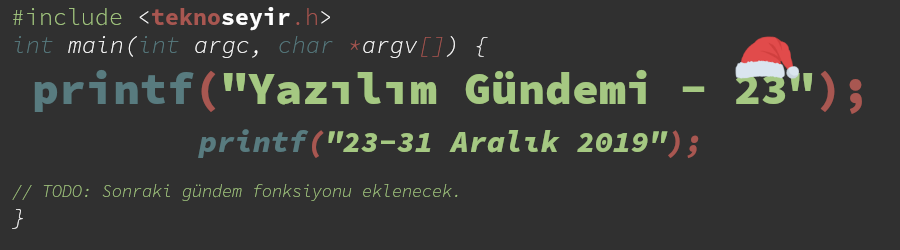
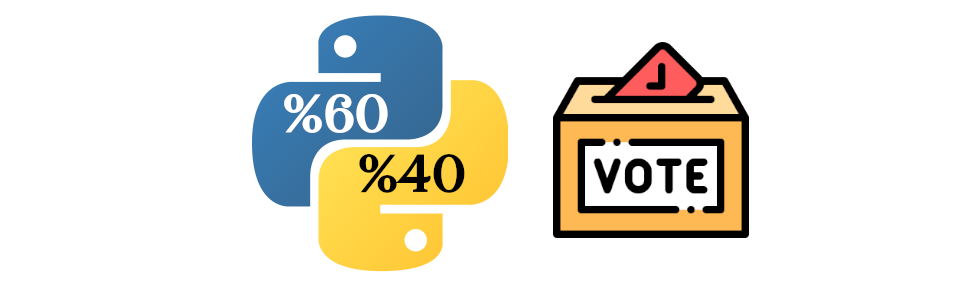
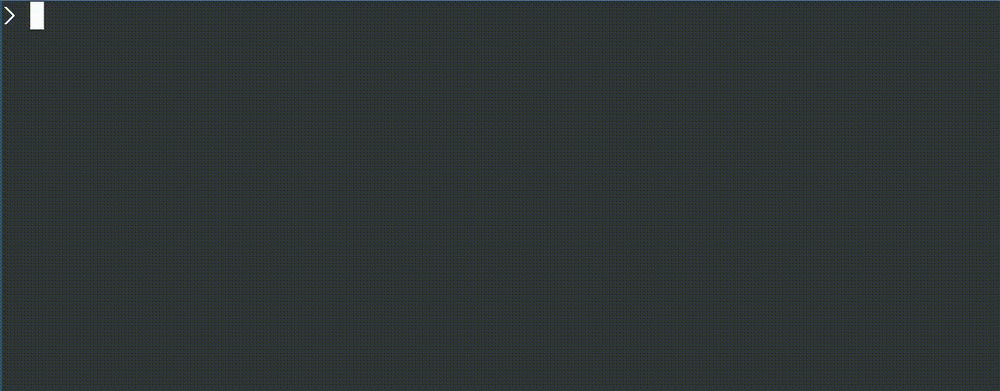
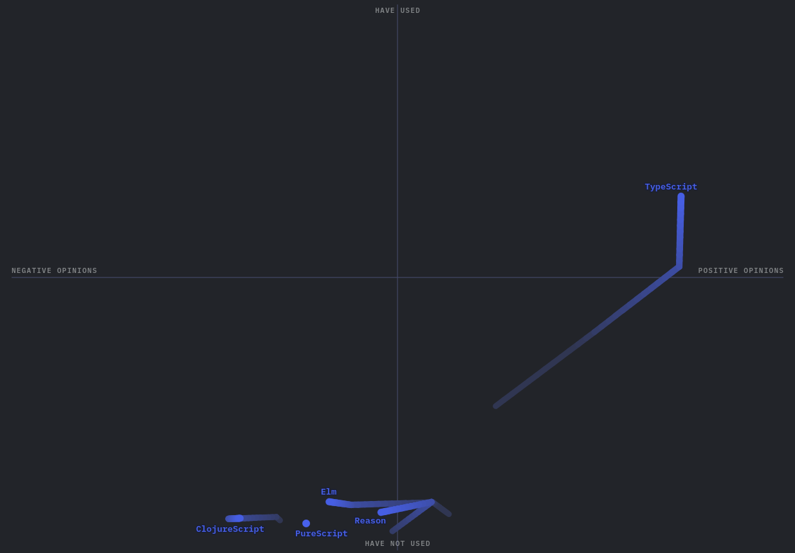
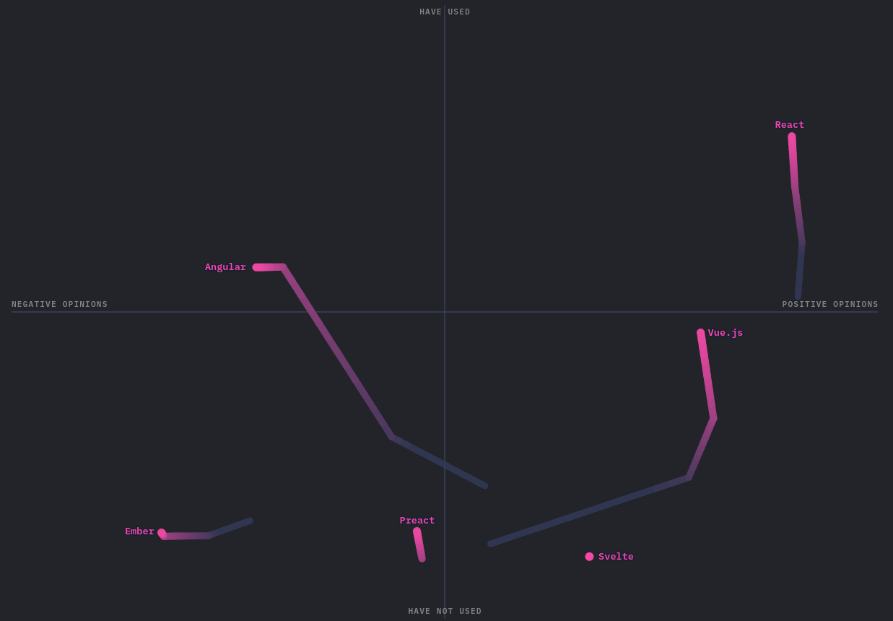
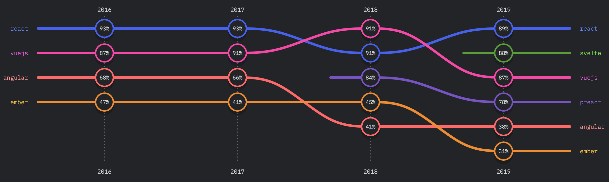

Yazılım Gündemi - 23
23-29 Aralık 2019
İçindekiler

< Önceki Gündem | 23-29 Aralık 2019 | Sonraki Gündem >
1 2020 dönemi için Python yönetim konseyi üyeleri seçildi

Python uzun zamandır geliştirilen bir programlama dili olduğu için haliyle yönetimi için de bazı kararlar alınması gerekiyordu. Kısaca tarihçesinden bahsetmek gerekirse: Guido van Rossum (Python dilinin yaratıcısı), 2018'in temmuz ayında Python mail grubuna bazı kararları verirken yorulduğunu ve artık karar verici konumunda olmak istemediğini belirten bir mail yazıyor ve topluluğa "kendi yönetim şeklinizi kendiniz belirleyin" diyor. Bunun üzerine python ana geliştirici takımı da çeşitli yönetim modelleri üzerine tartışmalar yaptılar ve "PEP 8016 - The Steering Council Model" sistemi üzerinde karar kıldılar. Daha sonra bu model üzerinde biraz değişiklikler yaparak bugün geçerli olan haline getirdiler: PEP 13 - Python Language Governance. Guio van Rossum yine yönetim kurulunun bir üyesi olarak seçilmişti.
Yönetim konseyi modelinden de kısaca bahsedeyim havada kalmasın. Bu modele göre yönetim konseyi 5 kişiden oluşabilir. Seçilen bu 5 kişi ise Python dilinin kalitesini ve stabilitesini sürdürmekte yükümlü olmasının yanı sıra, Python ana geliştirici takımı ve Python Software Foundation arasındaki ilişkiyi kurma, gerektiğinde kod yazarak katkı sağlama, uygun karar verme süreçlerini kurmak gibi görevlerle birlikte PEP'leri kabul etmek ya da reddetmek, davranış kurallarını güncelleyebilmek gibi güçleri de mevcut. Bu yönetim şekliyle ilgili diğer detaylar için PEP 13 sayfasını ziyaret edebilirsiniz.
Kasım ayında gerçekleşen aday belirleme süreçlerinden sonra bu ayın başlarında oylama işlemi gerçekleştirildi ve yeni yönetim konseyi üyeleri belli oldu:
- Barry Warsaw (50 oy),
- Brett Cannon (54 oy),
- Carol Willing (54 oy),
- Thomas Wouters (40 oy),
- Victor Stinner (38 oy).
Adayları sadece Python ana geliştirici takımı üyeleri önerebiliyor, eğer kişi Python ana geliştirici takımı üyesi ise kendini de önerebiliyor. Bu bağlamda Guido van Rossum da yönetim kurulu üyesi için önerilmişti fakat yazdığı forum mesajı ile adaylıktan çekildi ama "yine de ben buralardayım katkı sunmaya, soru yanıtlamaya devam edeceğim" dedi.
Yeni yönetim kurulu üyelerine başarılar dilerim. :)
Yeni yıla girerken daha önceki yazılım gündeminde de duyurduğum gibi Python 2'nin 1 Ocak 2020'den itibaren desteklenmeyeceği tekrar hatırlatmış olayım. Python 2'nin ölümü için geri sayım da burada gerçekleşiyor. Elveda Python 2.7…
2 Ruby 2.7 sürümü yayınlandı
Akıcı syntax'ından dolayı çok beğendiğim fakat uzun zamandır yazmaya fırsatım olmayan Ruby programlama dilinin 2.7.0 sürümü bu hafta yayınlandı. Zaten geçtiğimiz haftaki gündem yazısında da belirtmiştim bu hafta yayınlanacağını. Ruby 3 ile değişecek olan argüman işleme sisteminden ve Ruby 2.7'deki etkilerinden zaten geçen hafta Yazılım Gündemi - 22 yazısında bahsetmiştim. Onun dışındaki yeniliklere bakalım:
2.1 Pattern Matching [Deneysel]
Henüz deneysel olarak eklenmiş bu özellik ile birlikte artık objelerin içerisindeki istediğiniz yapılara göre eşleme yapabileceksiniz. Örnek verirsem daha iyi anlaşılacak. Şöyle ki, elinizde bir JSON verisi var diyelim:
{
"isim": "Ahmet",
"yas": "45",
"cocuklar": [{
"isim": "Mehmet",
"yas": 5
}]
}
ve kendi ismi Ahmet, çocuğunun ismi Mehmet olan birinin verisini çekip çocuğun yaşını yazdırmak istiyorsunuz. Eskiden bu şekilde yapıyorduk:
kisi=JSON.parse(json, symbolize_names: true) if kisi[:isim] == "Ahmet" cocuklar = kisi[:cocuklar] if cocuklar.length == 1 && cocuklar[0][:name] == "Mehmet" puts cocuklar[0][:yas] # => 5 end end
Daha karmaşık JSON verilerinde bu kod parçasının alacağı hali varın siz düşünün… ya da yok düşünmenize gerek yok Ruby 2.7 var:
case JSON.parse(json, symbolize_names: true) in {isim: "Ahmet", cocuklar: [{isim: "Mehmet", yas: cocuk_yas}]} puts cocuk_yas # => 5 end
Bu kadar kolay!
Bu özellik hakkında daha fazla bilgi için bu adresdeki sunum dosyasını inceleyebilirsiniz.
2.2 REPL iyileştirmeleri
REPL sistemi birçok popüler scripting dilinde artık olmazsa olmazlardan biri
haline geldi. Açılımı Read-Eval-Print-Loop olan bu özellik sayesinde
terminalinizinden ilgili programlama dilini interaktif bir şekilde
kullanabiliyorsunuz. Ruby dilinde de bu internaktif deneyim için irb aracını
kullanıyorduk. Ruby 2.7 ile bu araca yeni özellikler gelmiş.

irb aracına çok satırlı düzenleme özelliği gelmiş. Bununla birlikte kod
renklendirme de eklenmiş. rdoc entegrasyonu da sağlanmış.
3 JavaScript'in Durumu 2019 anketi sonuçları yayınlandı
JavaScript her geçen gün popülerliği daha da artan ve kullanılan bir dil. Her ne kadar bazı alanlara zorla sokulması hoşuma gitmese de şu an için -en azından sektör içerisindeki kullanıma göre- alternatifi yok gibi bir şey (WebAssembly'den yana umudum var). Her yıl düzenlenen JavaScript'in Durumu (State of JavaScript) anketi bu sene de düzenlendi ve sonuçları çok güzel grafiklerle birlikte duyuruldu. Bu aslında geçen haftanın haberiydi fakat yazı daha fazla uzamasın diye bu haftaya ertelemiştim. Öyleyse birkaç grafiği birlikte inceleyelim.
3.1 JavaScript'e dönüştürülebilen diller

Bu grafikteki her noktanın arkasındaki akış 2016 yılından bugüne aldığı yolu gösteriyor. Buna göre bakacak olursak: TypeScript'in liderliği çok açık ortada zaten diğer dillerin kullanımı da çok düşük. Ben bir zamanlar CoffeeScript dilini bir süre kullandım, hatta bu dille yazılmış bir açık kaynak Chrome eklentisine bayağı bir katkı sağladım fakat artık grafikte yeri bile yok. Açıkcası yazmaktan hoşlandığım bir dildi fakat şu an olsa yazar mıyım bilemiyorum.
3.2 Front-End kütüphaneleri

Açıkcası React'in yükselişi için pek sürpriz oldu diyemem ama bu sene ortaya çıkan Svelte'ye bu kadar pozitif bakılması beni şaşırttı. Bunların dışında Angular'ın kullanımı zaman içinde artmış fakat negatif tarafa düşmüş. Bir ara denemiştim ben de fakat fazla karışık gelmişti. Diğer kütüphanelerle ilgili pek bir bilgim yok.
İnsanların en çok memnun oldukları front-end kütüphaneleri sıralaması ise bu şekilde:

Diğer kategorilerdeki istatistikleri de paylaşmak isterdim fakat yazısı çok uzatmış olurum. O yüzden daha fazla istatistik ve bilgi için konu başlığına eklediğim bağlantıya tıklayabilirsiniz.
Alternatif olarak da şu blog yazısındaki istatistiklere göz atabilirsiniz.
4 Java 14 Feature-freeze sürecine girdi
Java programlama dilinin 14 numaralı sürümü için feature-freeze sürecine girildi. Yani artık programlama diline yeni özellik eklenmeyecek ve sürümün yayınlanması için çalışmalar yapılacak. JDK 14 "Rampdown Phase One" ismini verdikleri sürece girmiş. Release Candidate 1 sürümünün 6 şubat 2020, Release Candidate Final sürümünün ise 20 Şubat 2020 tarihinde yayınlanması planlanırken, genel erişilebilirlik için de 17 mart 2020 tarihi verilmiş. Kabul edilen JEP'ler (Java Enhancement Proposals) ise bu şekilde:
- JEP 345: NUMA-Aware Memory Allocation for G1
- JEP 349: JFR Event Streaming
- JEP 352: Non-Volatile Mapped Byte Buffers
- JEP 358: Helpful NullPointerExceptions
- JEP 361: Switch Expressions (Standard)
- JEP 364: ZGC on macOS
- JEP 365: ZGC on Windows
JDK 14'de Preview olarak eklenecek özellikler ise bu şekilde:
- JEP 305: Pattern Matching for instanceof (Preview)
- JEP 343: Packaging Tool (Incubator)
- JEP 368: Text Blocks (Second Preview)
- JEP 370: Foreign-Memory Access API (Incubator)
- JEP 359: Records (Preview)
Dilden kaldırılan ya da deprecate olan özellikler:
- JEP 362: Deprecate the Solaris and SPARC Ports
- JEP 366: Deprecate the ParallelScavenge + SerialOld GC Combination
- JEP 363: Remove the Concurrent Mark Sweep (CMS) Garbage Collector
- JEP 367: Remove the Pack200 Tools and API
Detaylıca incelemelerini önümüzdeki yazılım gündemi yazılarına bırakıyorum.
5 Yaklaşan Etkinlikler
| Etkinlik İsmi | Yeri | Tarihi |
|---|---|---|
| KVKK ve GDPR Kapsamında Veri Güvenliği | Ankara | 3 Ocak 18:30 |
| Asp.net MVC Framework Workshop | İstanbul | 3 Ocak 19:00 |
| Coffee and React Native | İstanbul | 4 Ocak 11:00 |
| Reactive Programming | İstanbul | 8 Ocak 19:20 |
| Sanal Gerçeklik ve Render ile Görselleştirme Teknolojileri | İstanbul | 9 Ocak 19:00 |
Mustafa Akgül Özgür Yazılım Kış Kampı katılımcı başvuruları 1 ocak tarihinde başlayacak.
6 Diğer Haberler
- WebAssembly için 2019 yılı özeti yayınlandı.
- JetBrains, MPS 2019.3 sürümünü duyurudu.
- PyPy 7.3.0 sürümü yayınlandı.
- Common Lisp derleyicisi SBCL, 2.0.0 sürümünü yayınladı.
- IntelliJ tabanlı IDE olan IntelliJ Rust, yeni bir changelog yayınladı.
- Rust ile yazılmış 2D grafik kütüphanesi lyon, 0.15.0 sürümünü duyurdu.
- Rust için SQL kütüphanesi SQLx 0.1.1 sürümüyle ortaya çıktı.
- Go ile yazılmış JSON sorgu aracı JQL yayınlandı.
- API test aracı vREST NG, 1.1.0 sürümünü duyurdu.
- Platformlar-arası uygulama geliştirmeye yarayan framework NeutralinoJS, 1.3.0 sürümünü yayınladı.
- C++ terminal uygulamalarında metin tabanlı tablolar oluşturmaya yarayan kütüphane yayınlandı: Tabulate.
- Scheme dili için geliştirilmiş web framework sistemi GNU Artanis, 0.4.1 sürümünü yayınladı. Yeniliklerle ilgili blog yazısı
- Rust için HTTP istemcisi reqwest, v0.10 sürümünü duyurdu.
- KDE Fremawork 6 için durum raporu yayınlandı.
- Bottender 1.1.0 sürümü çıktı.
7 Credits
- Banner görselinde kullandığım noel baba şapkası FlatIcons sitesinden, Vectors Market tarafından tasarlanmıştır.
- Python yönetim konseyi haberinin başlık görselindeki oy sandığı ikonu FlatIcons sitesinden, Freepik tarafından tasarlanmıştır.
8 Lisans

Yazılım Gündemi - 23 yazısı Eren Hatırnaz tarafından Creative Commons Atıf-GayriTicari-AynıLisanslaPaylaş 4.0 Uluslararası Lisansı (CC BY-NC-SA 4.0) ile lisanslanmıştır.